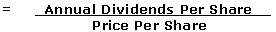

A financial ratio that shows how much a company pays out in dividends each year relative to its share price. In the absence of any capital gains, the dividend yield is the return on investment for a stock. Dividend yield is calculated as follows:
Dividend yield is a way to measure how much cash flow you are getting for each dollar invested in an equity position - in other words, how much "bang for your buck" you are getting from dividends. Investors who require a minimum stream of cash flow from their investment portfolio can secure this cash flow by investing in stocks paying relatively high, stable dividend yields.
To better explain the concept, refer to this dividend yield example: If two companies both pay annual dividends of $1 per share, but ABC company's stock is trading at $20 while XYZ company's stock is trading at $40, then ABC has a dividend yield of 5% while XYZ is only yielding 2.5%. Thus, assuming all other factors are equivalent, an investor looking to supplement his or her income would likely prefer ABC's stock over that of XYZ.
{kind=link}